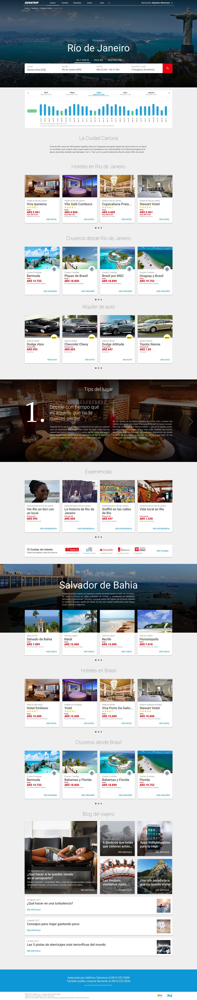

Avantrip is an online travel agency where I worked on many parts of the site over several years. This case study highlights one process: component-by-component studies of the pieces that make up the homepage, followed by the Landing HD, the design that came out of that analysis.
Before redesigning the homepage, I documented each of its recurring pieces on its own: what it is, when a user sees it, where it appears across the site, and every state it needs to support. Five of those studies are below, presented as they were presented to the client.
Anatomy of the card used across every vertical — flights, hotels, packages, cars, cruises — in both its full and minimal variants.
Navigation, logo lockups, and color variants for light and dark contexts.
A variant of the search box tailored to hotel search: destination autocomplete, dates, and guests.
The homepage that came out of all five studies above — every card, header state, and search box behaving exactly as documented. Click to explore the full page.

Redesigning a homepage all at once tends to produce a page that looks good in a mockup and falls apart in production, because nobody agreed on how the pieces behave in isolation. Studying each component first, including its edge cases, meant the final landing page was mostly assembly, not negotiation.